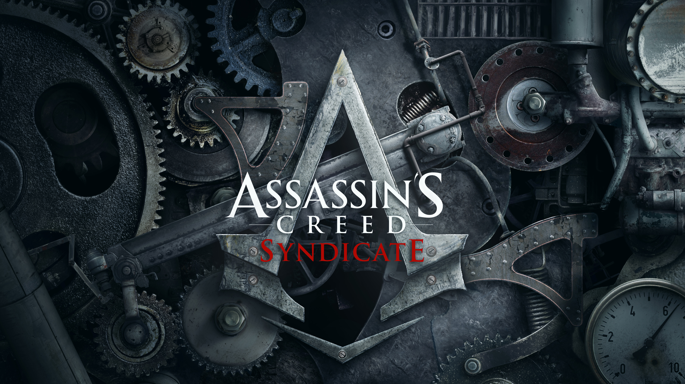

TITOLO: Assassin's Creed: Syndicate
SVILUPPO: Ubisoft Quebec
DATA DI USCITA: 23 Ottobre 2015 (PS4 e Xbox One),19 novembre 2015 (PC)
COLLOCAMENTO STORICO: Prima rivoluzione industriale, epoca vittoriana
AMBIENTAZIONI: Londra
TRAMA:
Inghilterra 1868, la storia segue le vicende di Jacob ed Evie Frye nel loro percorso all'interno della criminalità organizzata nella Londra Vittoriana e nella loro lotta contro il potere costituito, controllato dai Templari. Essi all'inizio, sotto ordine degli altri Assassini, uccisero rispettivamente Rupert Ferris (da parte di Jacob) e David Brewster (da parte di Evie). Durante lo scontro con Brewster, Evie scopre che i Templari hanno trovato due frutti dell'Eden, uno dei quali esplode alla fine della confessione dello scienziato. Terminati gli obiettivi, essi fuggono a Londra per strappare di mano il potere al Gran Maestro dei Templari, Crawford Starrick. Giunti nella metropoli conoscono Henry Green, l'assassino direttore della filiale degli Assassini a Londra. Jacob decide subito di creare una gang chiamata "Rooks", strappando poi Whitechapel dalle mani dei Blighters, la gang rivale. I fratelli Frye ottengono il quartiere uccidendo il luogotenente della zona, Robert Kailock, dal quale ottengono il treno ed una ferrovia, che istituiscono a quartiere generale.
Jacob ruba anche un prototipo di lanciacorda rotto e Green consiglia di andare a trovare un amico che potrebbe aiutarlo. Durante il tragitto, Jacob incontra Charles Dickens, che gli chiede di andare a trovarlo successivamente. L'amico di Green è Alexander Graham Bell, il famoso inventore, il quale in poco tempo realizza una versione migliorata del lanciacorda, da inserire nella polsiera della lama celata. Evie lo utilizzerà poco dopo per aiutare Bell con la realizzazione di una nuova ditta di fonografi, in grado di emettere la voce umana; è proprio Evie a suggerire il nome: telefono. Ottenuto il lancia corda Jacob viene a sapere di una droga che circola in città chiamata Elisir Lenitivo. L'Assassino insegue uno spacciatore per scoprire che la droga viene da un magazzino situato nella zona del porto. Giunto lì incontra Charles Darwin, anch'egli intento a fermare il circolo dell'elisir. Distrutto il magazzino, Jacob interroga un giornalista per scoprire chi è il produttore della droga che sembra provenire da un ospedale. In poco tempo Jacob giunge all'ospedale per uccidere il Templare produttore della droga: John Elliotson, un chirurgo che esegue esperimenti inquietanti sui pazienti. Jacob uccide il dottore, che in punto di morte continua ad affermare che stesse facendo del bene, perché "ormai i tempi sono cambiati" e Jacob è "solo un ragazzo che crede ancora di poter aggiustare il mondo a colpi di spada".
Successivamente iniziano i primi conflitti tra i Frye: Evie accusa il fratello di dare troppa poca importanza alla Confraternita degli Assassini, mentre Jacob non sopporta che sua sorella sia eccessivamente ossessionata nel seguire le orme del padre e la prende in giro ironizzando sul rapporto che ha con Henry Green. Le due strade iniziano quindi a dividersi: Evie trova la chiave della cripta alla cattedrale di St. Paul, ma le viene strappata da Lucy Thorne dopo un violento scontro, Jacob invece incontra Pearl Attaway, apparente alleata e socia in affari, ma successivamente si rivela nemica in quanto Templare e cugina di Starrick. L'Assassino, quindi, si vede costretto a ucciderla; qui scoppia l'ira di Crawford, deciso più che mai a vendicarsi. Evie si reca alla Torre di Londra e uccide Lucy Thorne; l'occultista, in punto di morte, accenna a poteri straordinari e incredibili che la Sindone può fare, ma non ha intenzione di dire all'Assassina di cosa di tratta realmente. Jacob invece è deciso a colpire le finanze di Starrick scoprendo che il suo banchiere, il signor Twopenny, nonché governatore della Banca d'Inghilterra, effettua rapine nella sua banca per arricchirsi a scapito dei poveri. Jacob lo uccide proprio durante una rapina nella sede centrale della banca così in questo modo, oltre a fermare il criminale, colpisce le finanze di Starrick.
Grazie all'aiuto del maharaja Duleep Singh, Evie ed Henry scoprono che la Sindone si trova a Buckingham Palace all'interno di una cripta e che i progetti del restauro che la evidenziano si trovano all'interno dello stesso palazzo, ma la zona è vietata e Evie non può procedere da sola.
Jacob sa che Starrick ha un uomo nel Parlamento intento a uccidere il Primo Ministro Benjamin Disraeli. Grazie alla moglie di quest'ultimo, scopre che l'uomo che cerca è il Duca di Cardigan; si reca quindi nella sede del Parlamento e lo assassina.
Dopo aver conquistato parte del territorio londinese, Jacob viene contattato da Maxwell Roth, una brillante mente criminale che pur essendo al servizio di Starrick nutre un forte desiderio di ucciderlo, chiede quindi aiuto all'Assassino di collaborare. I due diventano effettivamente alleati (anche se Roth prova molto probabilmente ben più di una semplice ammirazione per Jacob), tuttavia, quest'ultimo si accorgerà che Maxwell è in realtà un uomo rude che non prova pietà neanche per i bambini, tanto che pensa che per arrestare la produzione nelle officine di Starrick è necessario uccidere anche gli innocenti che vi lavorano. In seguito ad un invito ricevuto proprio da Roth, Jacob si reca al teatro Alhambra e uccide il mentecatto che avrebbe voluto "mantenere il mondo nel suo stato di divina follia".
In seguito, Evie e Jacob hanno una brutta litigata poiché la prima odia il fatto di aver dovuto rimediare ai disastri di suo fratello mentre quest'ultimo è stufo della sorella che continua a citare e affermare le teorie del padre; quando stanno per separarsi per sempre, Henry Green giunge con la notizia che la sera stessa ci sarà un ballo a Buckingham Palace e Starrick ha intenzione di rubare il Frutto dell'Eden approfittando dell'occasione, i gemelli Frye devono collaborare per l'ultima volta affinché ciò non accada. Dopo aver rubato gli inviti e la carrozza dei signori Gladstone, Jacob procura anche un'uniforme da guardia reale ad Abberline affinché questo nasconda le armi che all'interno del palazzo sono vietate. Durante il ballo Evie ruba i progetti nel Salotto Bianco, ma Starrick riesce a rubarle la chiave della cripta accedendo a quest'ultima. Recuperate le armi, i gemelli lo raggiungono e dopo una dura battaglia, alla quale parteciperà anche Green, riescono a uccidere il Gran Maestro e a liberare Londra dal controllo dei Templari. Jacob e Evie si chiariscono e quest'ultima diviene la moglie di Henry Green. I tre Assassini vengono nominati Cavalieri dalla regina Vittoria in persona e promettono di proteggere sempre l'Impero.
ARMI E COMBATTIMENTO:
I nuovi protagonisti sono i gemelli Jacob e Evie Frye, che dovranno guidare la rivoluzione popolare scoppiata a causa dell'oppressione da parte dei ricchi industriali.[9] Il giocatore avrà la possibilità di guidare una propria "gang"; sarà inoltre disponibile un nuovo tipo di arsenale: si potranno utilizzare, infatti, un tirapugni in ottone, un bastone animato, una rivoltella, un pugnale kukri e l'immancabile lama celata. Sarà inoltre disponibile un lanciacorda posto nella polsiera di Jacob ed Evie che servirà per scalare rapidamente gli edifici. I due personaggi del videogioco saranno entrambi utilizzabili dal giocatore, il quale potrà scegliere quale utilizzare durante il free roaming, le missioni secondarie e alcune missioni principali, mentre altre devono essere svolte obbligatoriamente da uno dei due gemelli. Evie predilige un approccio furtivo all'interno delle missioni e ha, di conseguenza, un maggior numero di armi silenziose rispetto a suo fratello, come ad esempio i coltelli da lancio. Jacob, al contrario di Evie, agisce principalmente d'impulso, preferendo un approccio violento e poco furtivo. Si vedrà quindi Jacob alle prese con grandi risse di strada fra i Rooks e le altre gang rivali, durante le quali il personaggio romperà ossa e combatterà principalmente sfruttando il corpo a corpo, mentre Evie aggirerà gli scontri, preferendo eliminare i nemici silenziosamente
DLC: "Jack lo Squartatore", "L'ultimo Maharaja", "Il Terribile Crimine" e "La Cospirazione di Dickens e Darwin"